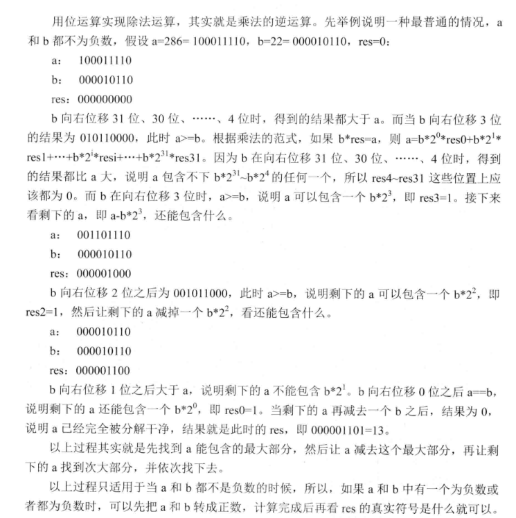

每种编程语言中都会有相关的位运算操作符，实现二进制的按位运算。 位运算有四种：与(&)，或(|)，非(~),异或(^) 熟悉每种位运算的特点，是做与位运算有关的题目的基础。
与(&)
0&0=0; 0&1=0; 1&0=0; 1&1=1;- 仔细观察上面的操作，发现与操作的结果与二进制加法的进位规则非常一致。
0+0=0 ; 0+1=0; 1+0=0; 1+1 = 1;(此处等号后面的数字表示应该的进位) n = n&(n-1)该操作的效果是把n的最后一个二进制1变为0. 此操作在涉及统计二进制数中1的个数的时候比较有用。n = n&(~n+1)该操作的效果是把n的最右边的二进制1留下，其余的1全部置0.n = n&(-n)该操作的效果是得到n的最后一个1
或(|)
0|0=0; 0|1=1; 1|0=1; 1|1=1;- ``
非(~)
~0=1; ~1=0
异或(^)
0^0=0;1^1=0; 0^1=1;1^0=1;- 仔细观察上面的操作，发现异或操作的结果与二进制加法(忽略进位的情况下)规则一致。
0+0=0;0+1=1;1+0=1;1+1=0;(此处等号后面的数字是无进位加法的结果) a^0=a; a^a=0; a^a^a=a偶数个a异或的结果是0，奇数个a异或的结果是a.a^(a^b)=b;b^(a^b)=a;此规则可以用来交换两个数字，无需额外的空间
除法
(a)/(a & (-a));, 去除末尾的若干个0. 例如 1011000 -> 1011
相关的应用
交换两个整数(不适用额外的空间)
此题是典型的利用异或运算的性质求解的题。 - a^a = 0; a^0 = a; - a^(a^b) = b ; b^(a^b) = a ; 具体的交换代码如下：
分析一下这三行代码，我们把原来的a,b 记作a1,b1;把交换之后的记作a2,b2;最后要达到的结果是a2=b1;b2=a1; 第一行，a=a^b, 此时a的值已经改变，变成了a^b的值； 第二行变成b = (a^b)^b = a, 此时b的值已经改变，变成了a的值。 第三行，此时的a=a^b,而b=a,所以 a=a^b=(a^b)^a=b,a变成了b的值。 通过分析可以发现，其实充当暂存中间结果的变量是a, a先存储了a^b的值，然后去跟b异或得到a,再跟得到的a异或得到b. 而一般的需要第三个变量做中介的交换思路是首先把b存起来，因为在b=a时，b的值丢失了。之所以利用异或不怕b的值丢失， 是因为可以利用得到的a再次得到b.
不用比较找出两个数中较大的数
 不用比较运算符比较两个数字的大小，可以使用减法运算符。 如果也不能使用减法运算符，可以考虑只使用位运算实现减法运算。
不用比较运算符比较两个数字的大小，可以使用减法运算符。 如果也不能使用减法运算符，可以考虑只使用位运算实现减法运算。 a-b = c 如果c>0,a>b; 如果c<0;c<b;但是不幸的是，还是用到的<或者> C++中有函数signbit(x)可以返回x的符号，使用的时候需要注意包含头文件#include <cmath> 另外需要注意的问题就是整数的溢出，a-b如果a是正数，b是负数，就会变成两个整数相加，这时候如果二者都接近 INT类型表示的边界，就会超出能够表示的最大的数的范围，产生正溢出。 同理，如果a是负数,b是正数，同样可能超出 能够表示的最小的负数的范围，产生负溢出。 幸运的是，如果知道二者异号，很容易判断谁大谁小。所以先判断是否是异号比较好，可以防止数据溢出产生错误。
|
|
不使用任何算术运算只使用位运算实现加减乘除
加法运算的思路 不考虑进位的情况下，
a^b就是a+b的结果 只考虑进位的情况下，(a&b)<<1就是a+b的结果 所以综合二者，就能得到加法的正确答案。减法的思路
a-b = a+(-b);而-b = ~b+1每个二进制位取反再加1.乘法运算的思路 a*b 把b看成二进制位，每次把a左移（相当于乘以2），看b对应的位置上是否是1， 是1就将结果加到最终的结果上，是0就不加，返回最后的结果。
除法运算的思路 
 1234567891011121314151617181920212223242526272829303132333435363738394041424344454647484950515253using namespace std;/*** 用位运算实现加法运算* 按照二进制位加法 0 + 0 = 0 | 0 + 1 = 1 | 1 + 1 = 0* 如果不考虑进位，该规则正好与异或相同** 考虑什么时候会产生进位 0 + 0 = 0 0 + 1 = 0 1+ 1 = 1* 该规则正好与 & 运算一致** 所以分别考虑无进位相加和只考虑进位的结果 加在一起就好了。* @return*/int add(int a,int b){int sum =a ;while(b!=0){sum = a ^ b;b = (a & b) << 1;a = sum;}return a;}/*** 用位实现减法运算， 不能用-运算符* @param a* @param b* @return*/int minus2(int a,int b){// a - b == a + (-b)// -b == ~b + 1add(a,add(~b,1));}/*** 用位运算实现乘法** @return*/int cheng(int a,int b){int sum = 0;while(b!=0){if(b&1!=0){sum = add(sum,a);}a<<=1;b>>=1;}}int main() {std::cout << cheng(-20,500) << std::endl;return 0;}
1234567891011121314151617181920212223242526272829303132333435363738394041424344454647484950515253using namespace std;/*** 用位运算实现加法运算* 按照二进制位加法 0 + 0 = 0 | 0 + 1 = 1 | 1 + 1 = 0* 如果不考虑进位，该规则正好与异或相同** 考虑什么时候会产生进位 0 + 0 = 0 0 + 1 = 0 1+ 1 = 1* 该规则正好与 & 运算一致** 所以分别考虑无进位相加和只考虑进位的结果 加在一起就好了。* @return*/int add(int a,int b){int sum =a ;while(b!=0){sum = a ^ b;b = (a & b) << 1;a = sum;}return a;}/*** 用位实现减法运算， 不能用-运算符* @param a* @param b* @return*/int minus2(int a,int b){// a - b == a + (-b)// -b == ~b + 1add(a,add(~b,1));}/*** 用位运算实现乘法** @return*/int cheng(int a,int b){int sum = 0;while(b!=0){if(b&1!=0){sum = add(sum,a);}a<<=1;b>>=1;}}int main() {std::cout << cheng(-20,500) << std::endl;return 0;}
整数的二进制表达中有多少个1
题目： 给定一个32位的整数，可0，可正，可负，返回该整数的二进制表达中有多少个1. 第一种方法是每次右移，然后统计1的个数，这种方法需要统计32次。 第二种方法只有原来数字中有多少个1有关，1越少速度越快。 n = n&(n-1) 该操作可以抹掉n最右边的1 n = n&(~n+1) 该操作可以得到n最右侧的1 使用上面的任意一种操作，可以设计算法实现只与1的个数有关的算法。
找出一个只出现一次的数字
题目： 一个整数数组中，只有一个数字只出现了一次，其他所有数字都出现的两次，找出这个出现一次的数字。 变种： 一个整数数组中，只有一个数字出现了奇数次，其他所有的数字都出现了偶数次，找出这个出现奇数次的数字。 了解异或运算特点，a^a = 0; a^0 = a; a^a^a = a; 出现偶数次的数在异或运算下都是0，出现奇数次的数异或之后就是它本身。
这个题目还可以从另外一个角度去理解，K个K进制的数字如果忽略进位相加的话，结果一定是0.那么nK个K进制的数字相加的话，结果 也一定是0. 而异或恰好是二进制无进位相加的实现。 了解了这一点，如果我们能够像异或这样，实现任意的K进制数无进位相加的结果，就可以解决下面这样的问题： 在其他数字都出现K次的数组中找出只出现一次的数字。
找出两个只出现一次的数字
题目：一个整数数组中，只有两个数字只出现了一次，其他所有数字都出现的两次，找出这两个数字。 思路：异或一遍之后得到的结果是a^b， a,b必然有一位是不同的(如果结果是0，那么a=b，说明并没有两个只出现一次的数字)。 根据这个二进制位将原来的数据分成两组，分别异或一遍即可得到这两个数字。
找出三个只出现一次的数字
题目：一个整数数组中，只有三个数字只出现了一次，其他所有数字都出现的两次，找出这三个数字。 思路：整体异或一遍，得到x=a^b^c. 设f(x)表示获取x的最后一位二进制1，例如f(10100)=00100. n = f(x^a)^f(x^b)^f(x^c), 设n的最后一个二进制位1在第m位上。则有x^a,x^b,x^c只有一个数字在第m位上是1，其余的两个数字在第m位上都是0. (具体的推导过程参考这里).
算法步骤：
abc = 0; 循环一遍：abc^=v[i], 得到x=a^b^c;g1 = 0; 循环一遍：g1^=getLastOne(abc^v[i]);, 得到上面提到的n.g1 = getLastOne(g1), 得到分界数字，上面提到的第m位置1的数字。- 把所有满足
getLastOne( v[i] ^ abc ) == g1条件的分成一组，该组中只包含a,b,c三个数字中的一个数字，异或一遍，得到a. - 剩下的就是找到两个数字了。
|
|
在其他数字都出现K次的数组中找到只出现一次的数
这里要明白一个规律，K个相同的K进制的数无进位相加的话，结果必然是0，因为所有是0的位还是0，所有不是0的位都加到了需要进位，除去进位，就是0. 明白了上面的一点，这个问题就容易解决了。首先把所有的数字转换成K进制，然后实现无进位相加的函数,再把结果转换回十进制输出即可。
另外一种解法：
可以统计所有数字每个二进制位上1的个数。然后每个二进制位对K取余，哪些出现K次的数字累加到对应位上的和肯定是K的倍数，取余之后就是0.剩下来的就是那个只出现一次的数字。
|
|
|
|
快速的求一个整数的N次方
|
|